IDEAL C.V is a content management system, for managing CV sites,a best and smart choice for all your Resume, CV, Profile related websites which is a perfect ensemble of elegance and user experience in a gorgeous user interface dedicated to self-promotion, selling, and showcasing yourself via online. Using this modern and creative themed IDEAL C.V template people will know who you are, what your projects are, what achievement you gain and so on. It is like an online CV really helpful for ones desirable to impress employers for a job vacancy, you can just forward a link to your manager, your boss, your friends which is a great way for creating an excellent impression to Your boss or your company or the interviewer or anybody and you can also use it for your company, personal, political leader, doctors and celebrity profile site, Job Portal, design agency, designers, photographers, illustrators, video producers , architects and others who need an easy, attractive and effective way to share their work with clients or articulate your personal, technical, education, professional expertise in elegantly and seamlessly.
After the purchase, you must equip your server so that you can use the software properly, follow these steps :-
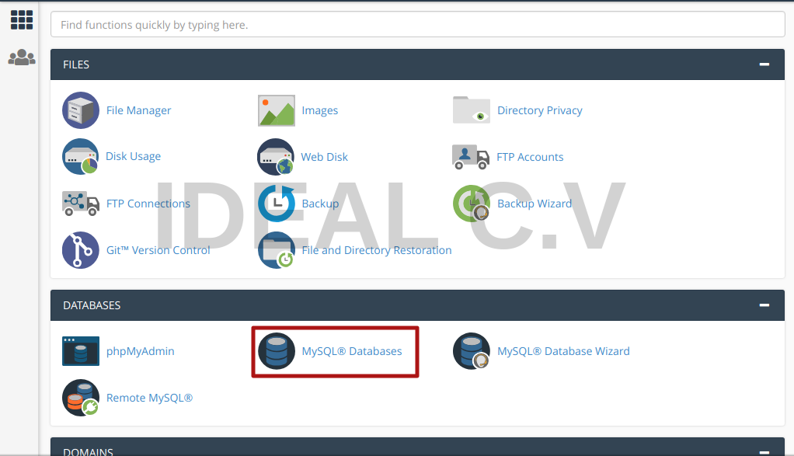
We type the name of the database in the field, it should not contain dots or tokens such as @ # $% ^, but you can use _ or -
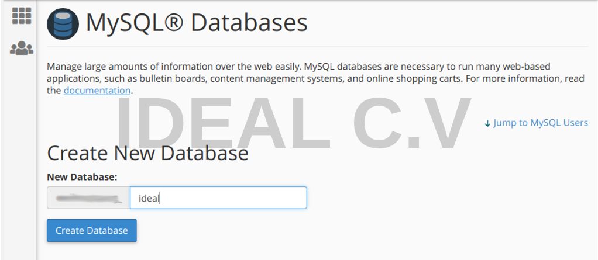
Choose a unique name for the database, when you specify a password for the database, we recommend that you use characters and tokens such as @#$%^&* and numbers 1-9
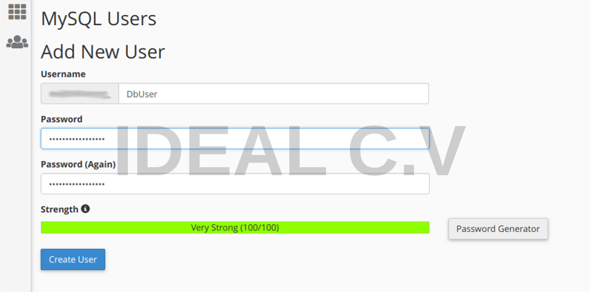
The user is linked to a database that we have created .
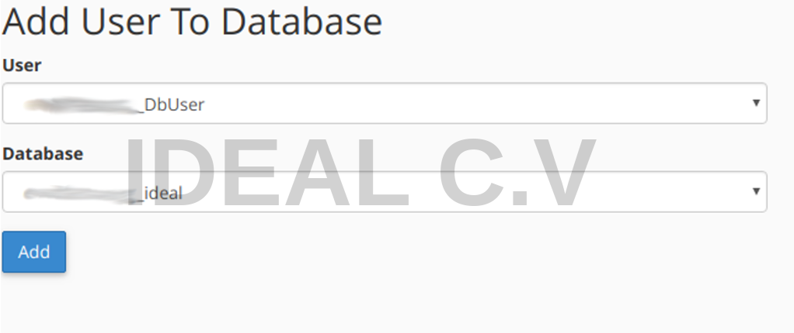
When you add the user to the database, we have to give the user permission to use the database, we will select ALL PRIVILEGES .
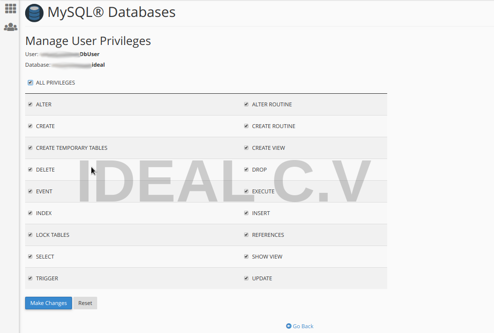
Notice :- A PHP file must have permissions set to 644. Any folder containing PHP files and PHP access (to upload files, for example) must have permissions set to 755. PHP will run a 500 error when dealing with any file or folder that has permissions set to 777!
We click to select File Manager to upload the application file.
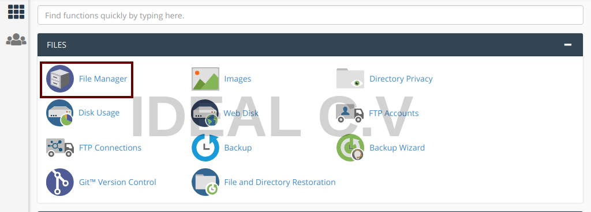
In step 2, you must first clear all previously existing files and folders, to prevent any file conflict with our application, and then click on the Upload
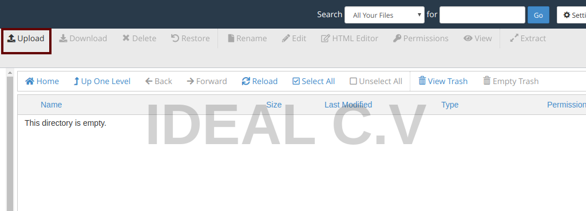
Choose the application file from your local machine, the file will be uploaded as soon as you choose the file
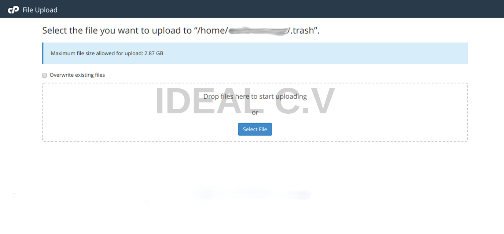
After the file is uploaded, we'll have a IDEAL-CV-v1.0.zip file, we'll extract the compressed files inside it, by clicking the right mouse button and then choosing Extract
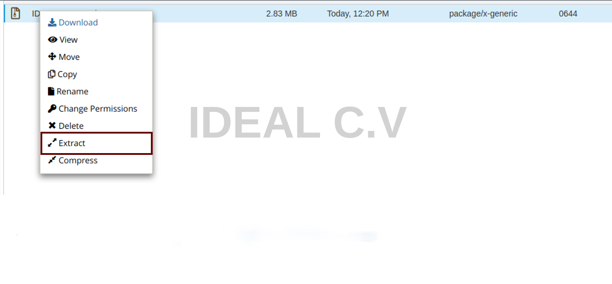
After extracting the file, we have two folders, a document folder, and an application folder IDEAL C.V
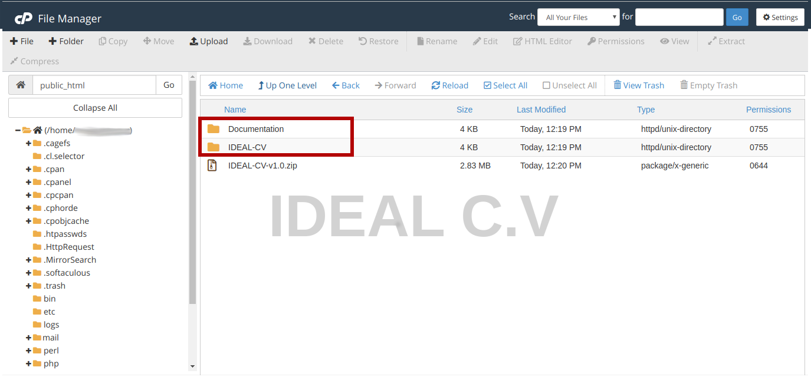
We click on the IDEAL-CV folder and then click on the Select All and then click on Move
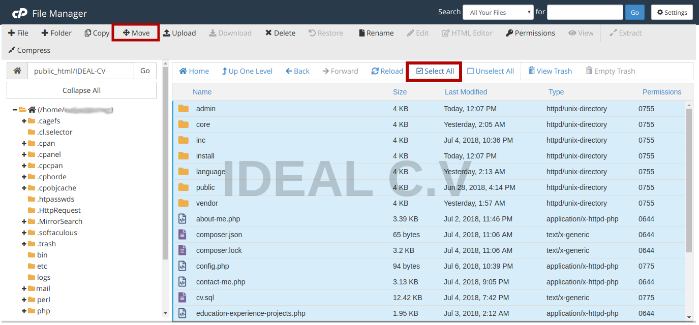
When you click Move , the following window will appear and the path must be/public_html/so that the application works directly on the domain, for example :- www.example.com
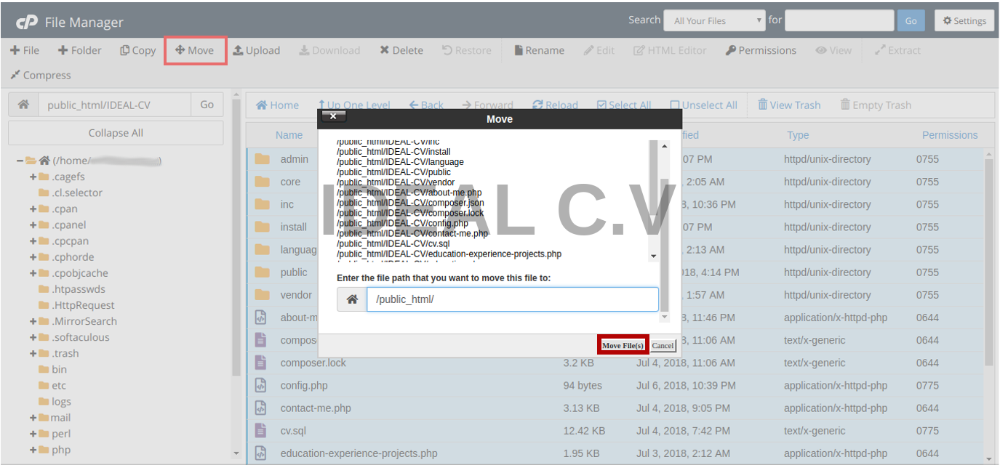
After you perform the preceding steps, we will have the application file IDEAL-CV-v1.0.zip, which causes us damage it is easy to attach the file name to the path of our site and it will be loaded. So we had to delete the file from the path of our site, by clicking Delete, if you want to keep the project file on your local computer, you can easily click on the Download.
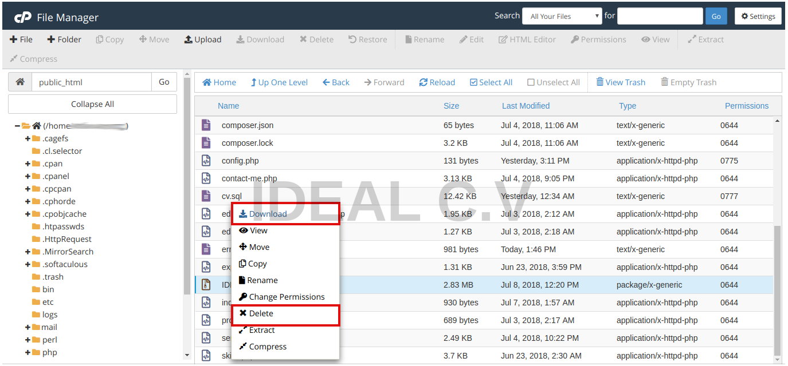
We congratulate you. The server initialization has been successfully completed, you can now visit the domain and automatically be routed to the application installation path, follow these steps :-
In this step, the application verifies whether the requirements are available or not if the requirements are available. The next step button will be shown, but if one or more missing requirements are present, the button will not be shown.
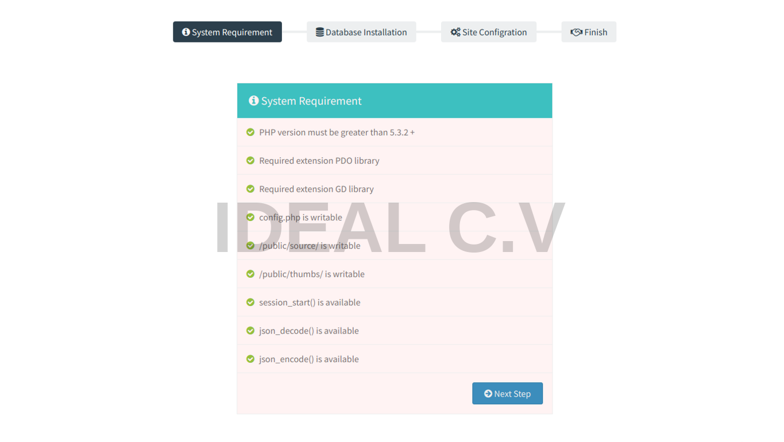
After you make sure that all the requirements are available, the second step is to install the database, and in the server initialization step, we was created the database user name, database user password, and database itself, we'll inserted them into the following fields.
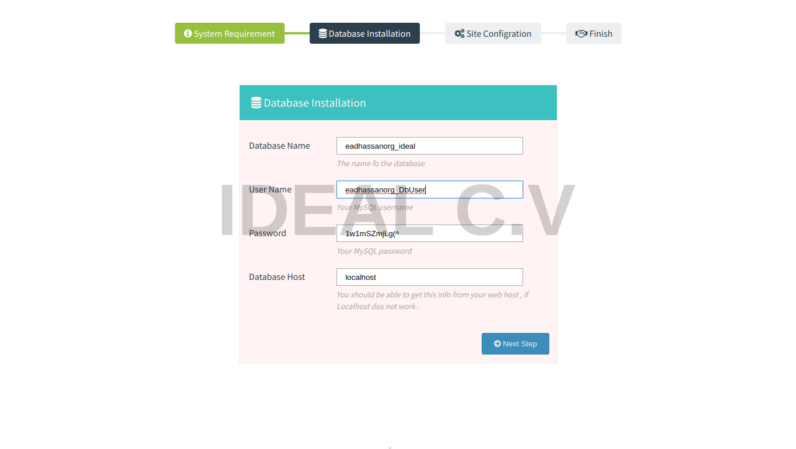
We must enter the name of the site, username and password in that step, and tags and a short description for the SEO.
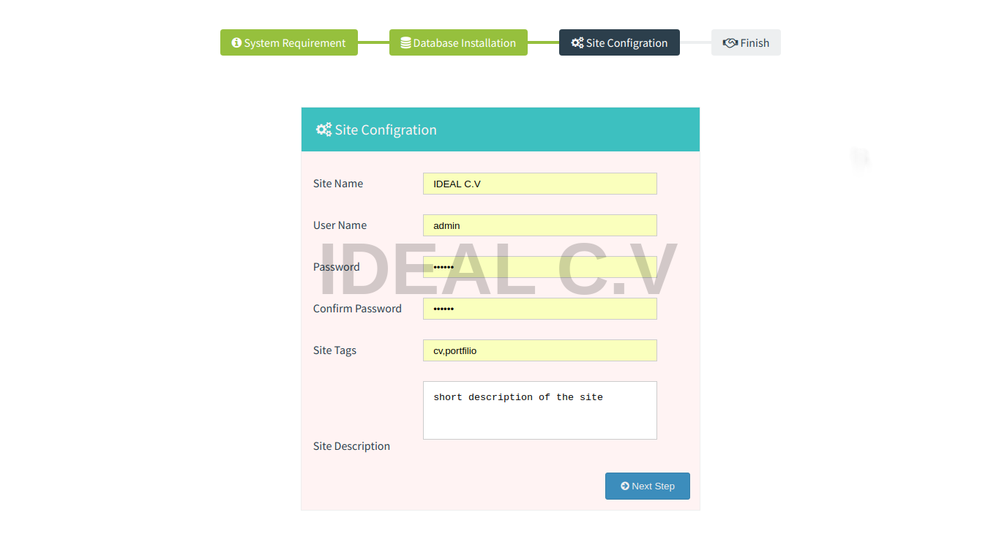
Congratulations you have successfully installed the application, click Login will be converted to the login page to control the application in an easy and flexible manner, thank you for using our application.
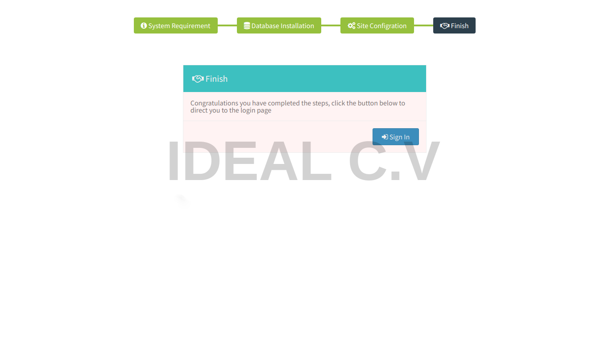